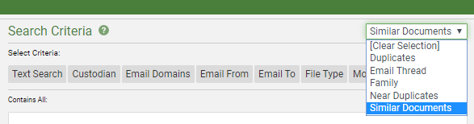
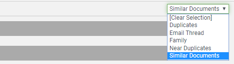

The Similar Documents search relationship allows documents deemed similar to those documents included through other search relationships and criteria to also be included within Visual Search, Advanced Search, as well as on the Results tab (Quick Search).
In addition, there is now a Similar Documents panel available within the Document Viewer.
On the Visual Search tab (

On the Advanced Search tab(see

On the Results tab (see

|
|
Note: This selection may be changed only by changing the corresponding selection in the Search Criteria drop-down menu in the Visual Search tab or the Advanced Search tab. See |
Related Topics